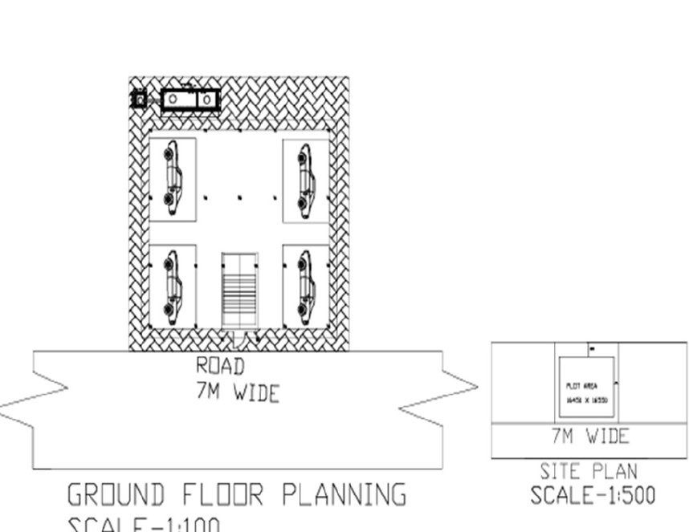
G+2 Residential Building
Planning, design and drafting of a G+2 reinforced-concrete residential building — site planning, RCC detailing and a full AutoCAD sheet set. Academic / portfolio project.
CIVIL ENGINEER / BIM & REVIT / KOLKATA, INDIA
Site execution, structural drafting and quantity estimation across ₹9500+ Cr and ₹2000+ Cr infrastructure work — now coordinating model-based BIM workflows in Autodesk Revit.
SYSTEM / 01
Level-based Revit modelling — grids, parametric families and coordinated documentation.
2D structural and architectural drafting, from site plan through detailing sheets.
Reinforced concrete execution on site — pours, curing sequence and quality checks.
Bar bending schedules and reinforcement detailing referencing IS codes.
Take-offs and material planning maintained in MS Excel against drawings.
Coordinating site teams against drawings and specification to minimise rework.
RECORD / 02
ASSISTANT ENGINEER TRAINEE
S. K Samanta & Co. (P) Ltd. — Jul 2025 – Apr 2026
Amrapali & Magadh CHP Projects ₹2000+ Cr
ASSISTANT ENGINEER
Amara Raja Infra Pvt Ltd. — Apr 2026 – Present
Amara Raja Giga Corridor, Divitipalli ₹9500+ Cr
ARCHIVE / 03

Planning, design and drafting of a G+2 reinforced-concrete residential building — site planning, RCC detailing and a full AutoCAD sheet set. Academic / portfolio project.
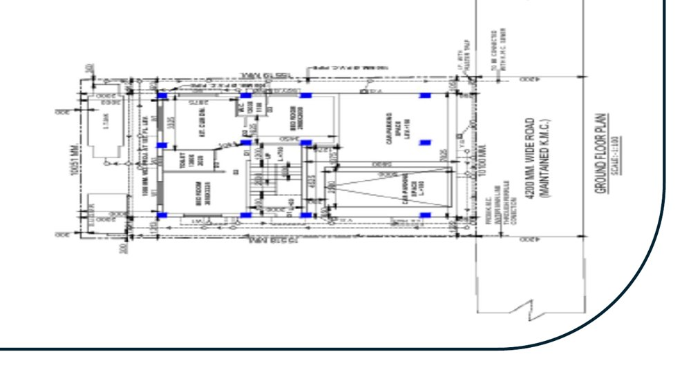
End-to-end BIM workflow for a multi-storied residential building in Autodesk Revit — architectural and structural coordination, with drawings and schedules extracted directly from the model.
PROJECT 01
PROJECT 02
SWIPE →
PROJECT / 001 — STRUCTURAL + CAD
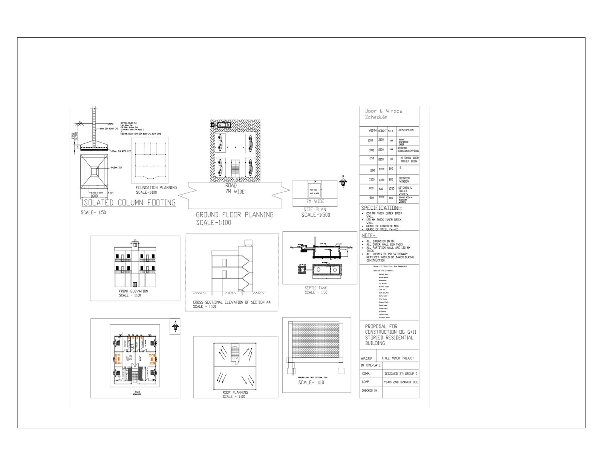
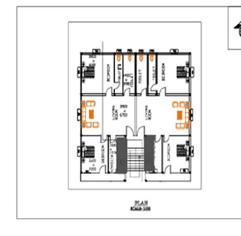
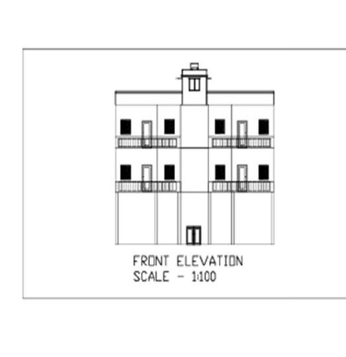
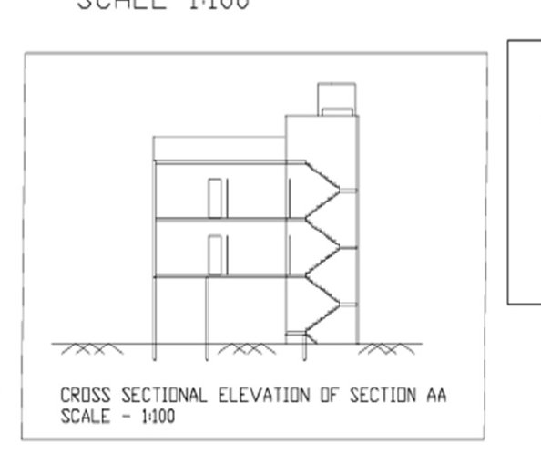
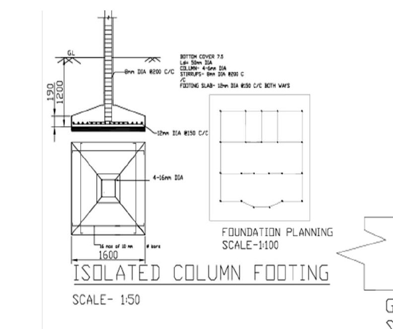
Academic / portfolio project — structural design calculations are limited to conceptual understanding and standard detailing, not professional structural approval.
PROJECT / 002 — BIM / REVIT
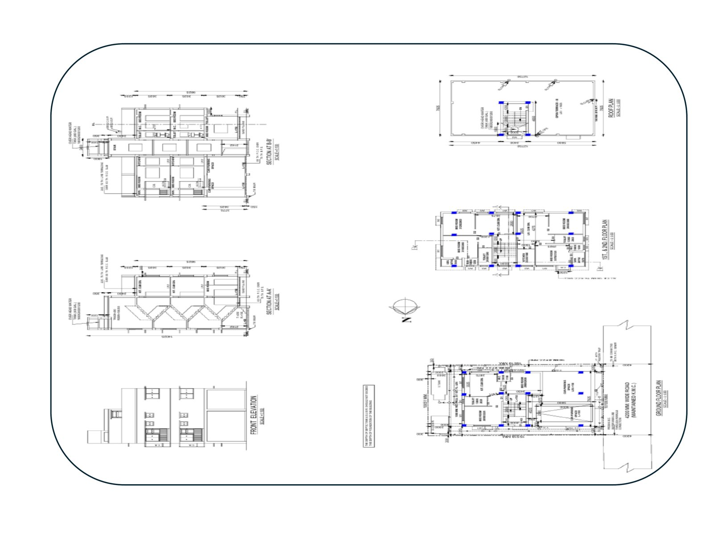
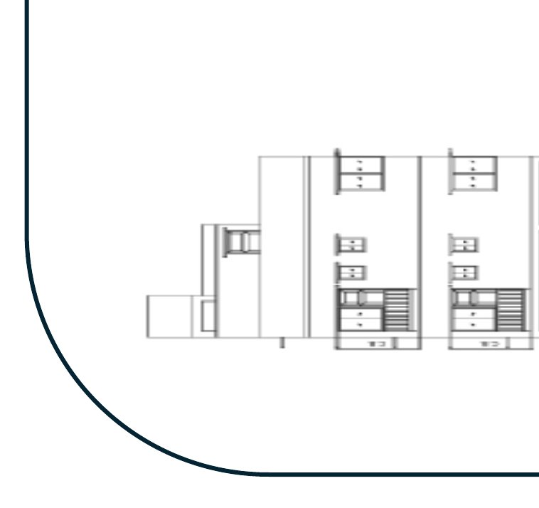
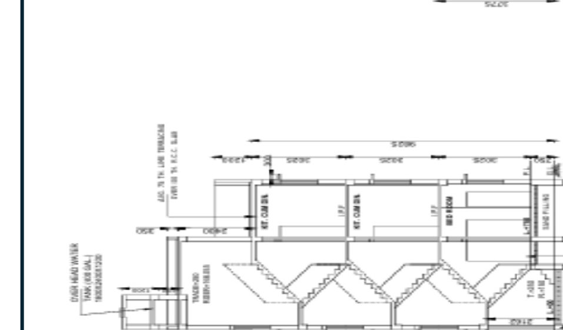
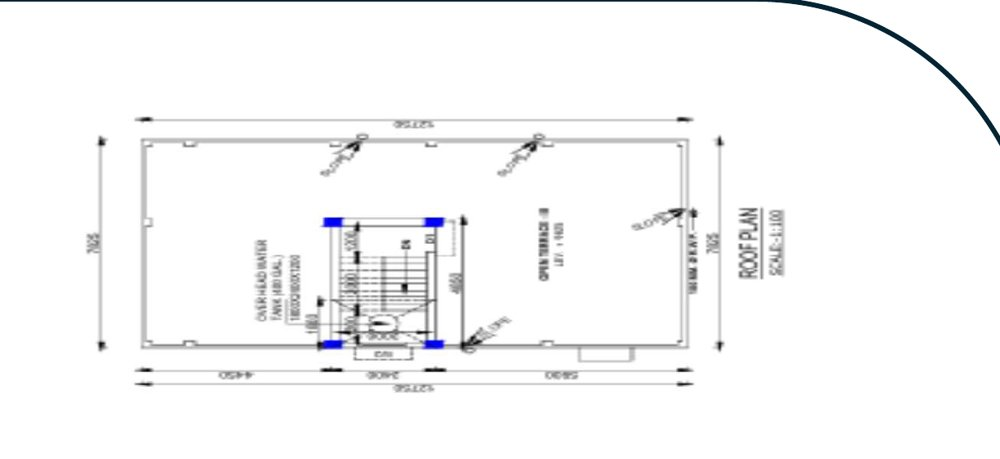
PIPELINE / 04
Levels, grids and project units defined. Naming conventions standardised.
Walls, floors, roofs, doors and windows modelled. Space planning optimised for ventilation and usability.
RCC slabs and columns placed with level coordination. Stair structural alignment checked through sections.
Clash-free alignment between architectural and structural elements across floors.
Plans, elevations and sections auto-generated. Schedules extracted directly from the model.
MATRIX / 05
PROFILE / 06
Sainik works across civil engineering's full span — from RCC execution and structural drafting on active infrastructure sites, to quantity estimation and bar bending schedules prepared against IS codes. That site-level grounding is now extending into BIM: coordinating architecture and structure inside a single Revit model rather than across disconnected drawing sheets.
The direction is model-based coordination — fewer drafting errors, faster documentation turnaround, and construction workflows that hold together from foundation to finish.
RECORD / 07
B.E in Civil Engineering
Diploma in Civil Engineering
Secondary Education
BIM Fundamentals
AutoCAD Professional
Design & Drafting Internship
CONTACT / 08